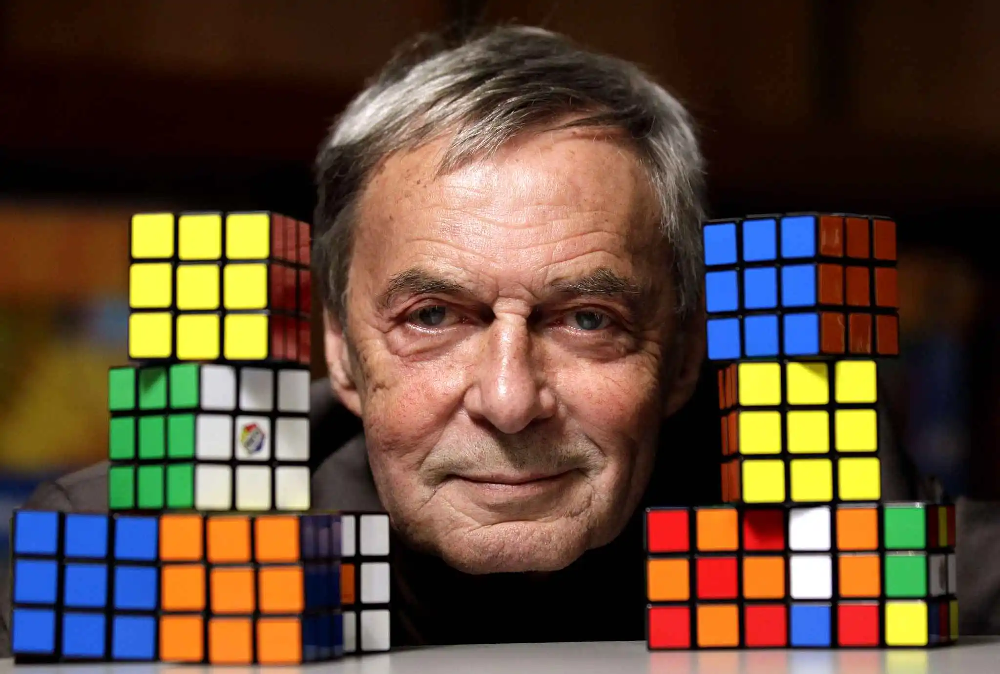
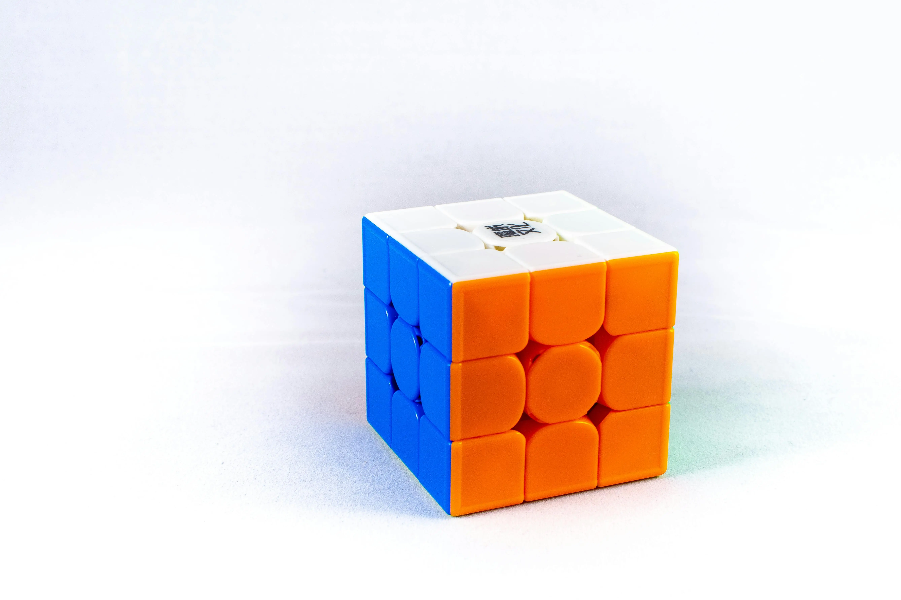

History of the Rubik's Cube

Erno Rubik is a Hungarian design teacher who was very intrigued in finding a way to model three dimensional movements to his students. Around 1974, he spent months with blocks of wood and paper, trying to find a way to glue them together so they could move harmonically. He then held the blocks with rubber bands and paper clips, finally creating what he called ‘Magic Cube’. 6 years later, in 1980 the invention was renamed the Rubik's Cube, and released as a toy from Ideal Toy & Novelty Company being a huge success even to this day.
